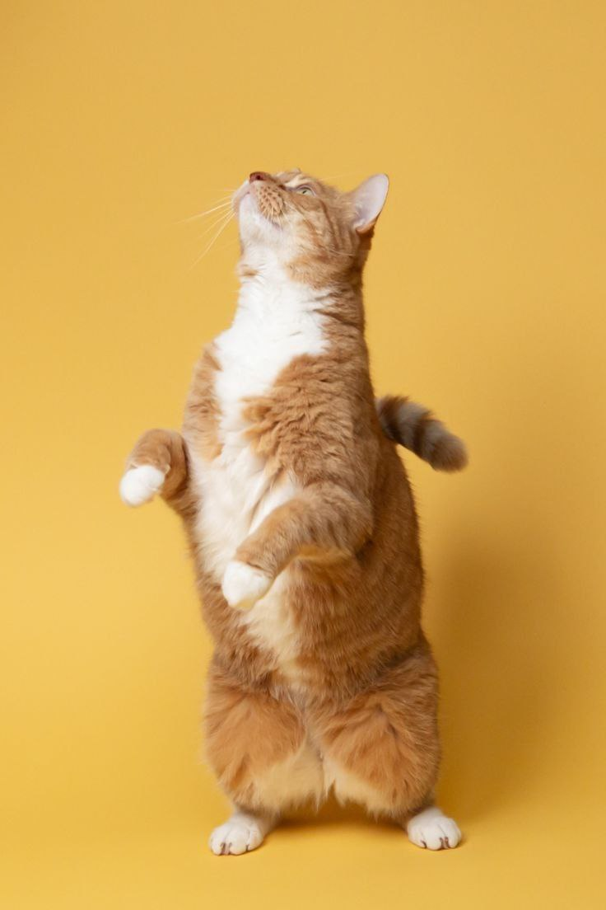
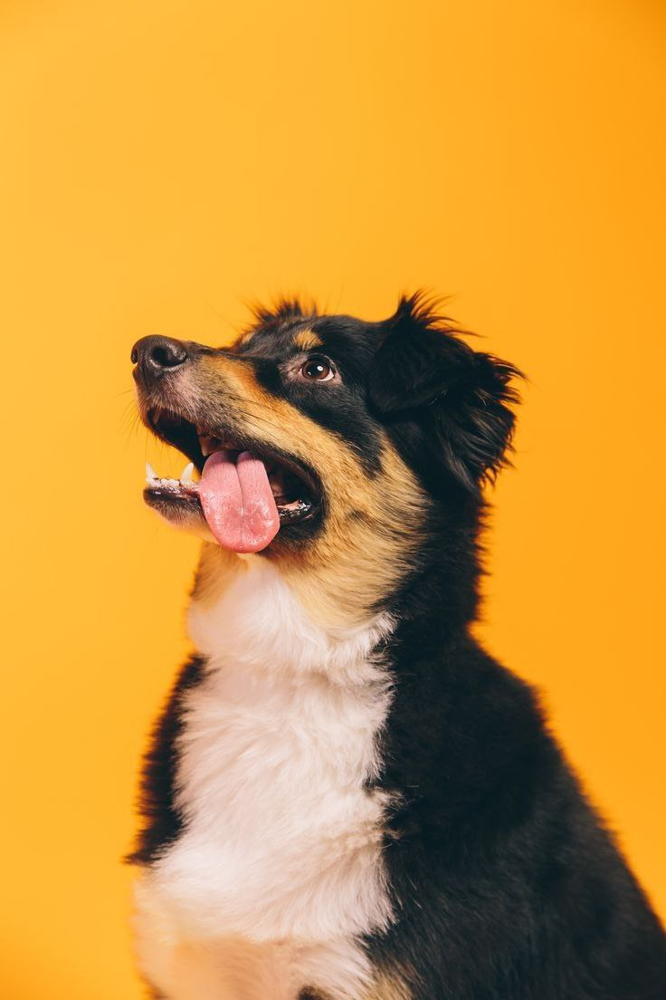
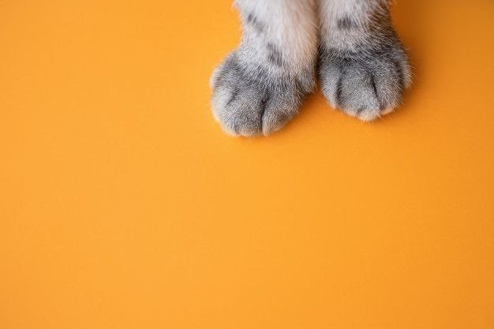

Цей сайт створений для оптимізації порятунку безпритульних тварин. Тут ти зможеш сповістити про безпритульну тварину, надати свою допомогу притулкам та матимеш можливість подарувати нашим меншим
Подаруй родину хвостатому другу.

Муркотики

Песики
Допоможи притулку

Стань волонтером на день
Багато притулків потребують допомоги, а саме: прибрати в клітках, погодувати тварин, вигуляти та доглянути за твариною тощо. Не будь байдужим та допоможи притулку, запропонуй свою допомогу, і після кнопка стати волонтером.